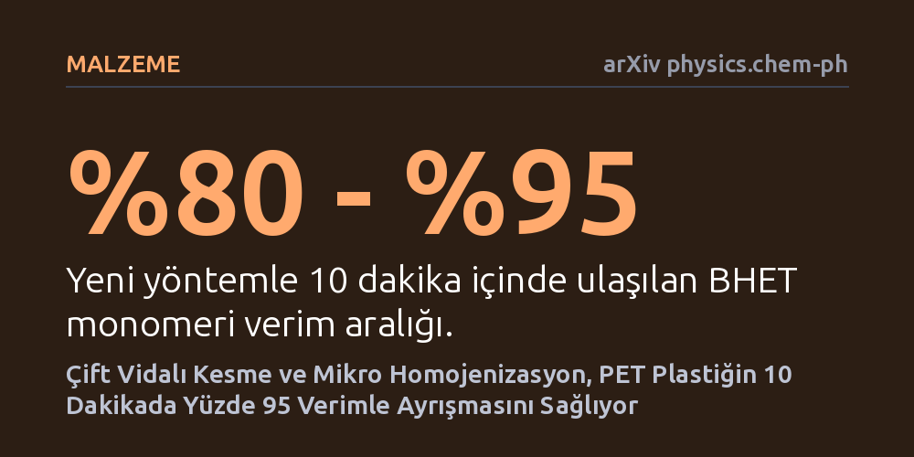

MALZEME · arXiv physics.chem-ph · 2026-10-13
Çalışma, PET plastik atıkların kimyasal geri dönüşümünü hızlandırmak için mekanik kesme ve mikro homojenizasyonu birleştiren yeni bir yöntem öneriyor. Bu yaklaşımla saatler süren reaksiyon süresi 10 dakikaya inerken temel monomer olan BHET verimi yüzde 95'e ulaşıyor.
PET plastiklerin geri dönüşümündeki asıl engelin kimyasal tepkimeden ziyade akışkanlık ve kütle aktarımı gibi mühendislik sınırları olduğunu göstererek plastiklerin kalitesini kaybetmeden sonsuz döngüde geri dönüştürülebileceğini kanıtlıyor.

Su şişelerinden giydiğimiz sentetik kıyafetlere kadar modern hayatın vazgeçilmez bir parçası olan polietilen tereftalat (PET), doğada yüzlerce yıl bozulmadan kalan dayanıklı bir plastiktir. Mekanik geri dönüşüm plastiği sadece eritip yeniden şekillendirdiği için malzemenin kalitesi her döngüde düşer ve bir süre sonra çöp olmaktan kurtulamaz. Bu nedenle döngüsel ekonominin asıl hedefi, plastiği kimyasal tepkimelerle orijinal yapı taşlarına ayrıştırıp sıfır kalitesinde yeni plastik üretebilmektir. Bu alandaki en köklü yöntem olan glikoliz (etilen glikol ile parçalama), laboratuvar tüplerinde onlarca yıldır yüksek verimle çalışmasına rağmen sanayi ölçeğine bir türlü taşınamamıştır.
Sorun, kimyacıların reaksiyonu küçük ölçekte optimize ederken dev üretim tesislerindeki fiziksel engelleri göz ardı etmesidir. Binlerce litrelik reaktörlerde eritilen plastikler, aşırı yoğun bir kıvama ulaşarak reaktör çeperlerine yapışmakta, ısıyı iletmemekte ve karıştırıcıları kilitlemektedir. Saatler süren yüksek sıcaklık uygulaması hem aşırı enerji tüketmekte hem de istenmeyen yan kimyasalların birikerek saflığı bozmasına yol açmaktadır. Bu durum, kimyasal geri dönüşümün ekonomik olarak sanayileşmesini bugüne kadar engellemiştir.
Araştırmacı, geleneksel sistemlerin başarısızlığını üç ana mühendislik arızasına bağlamaktadır: kütle aktarımının çökmesi, kıvam (viskozite) kilitlenmesi ve yan reaksiyonların birikmesi. Bu fiziksel engelleri aşmak amacıyla, insan ve yapay zeka iş birliğine dayalı bilimsel akıl yürütme birimleri kullanılarak yeni bir süreç modeli geliştirilmiştir. Çalışma, hantal kazan tipi reaktörler yerine plastik sanayisinde yüksek viskoziteli eriyikleri işlemek için kullanılan çift vidalı mekanik kesme teknolojisini kimyasal geri dönüşüm sürecine entegre etmiştir.
Önerilen yöntem, birbiriyle eş güdümlü çalışan üç aşamadan oluşmaktadır. İlk aşamada, çift vidalı sistemin uyguladığı kontrollü mekanik kesme kuvvetleriyle eriyik sürekli inceltilerek moleküler temas yüzeyi en üst düzeye çıkarılır. İkinci aşamada, katı fazda mikro homojenizasyon sağlanarak eriyik içindeki topaklanmalar çözülür ve viskozite engeli aşılır. Üçüncü aşamada ise ikiye bir (2:1) etilen glikol/oligomer oranı uygulanarak derin depolimerizasyon başlatılır ve kimyasal parçalanma son derece hızlı bir akışkanlar mekaniği içinde yürütülür.
Mekanik kuvvetlerle kimyasal tepkimenin bu şekilde birleştirilmesi, reaksiyon kinetiğini alışılagelmiş sınırların ötesine taşımıştır. Geleneksel glikoliz yöntemlerinde polimerlerin parçalanması için gereken saatler süren ısıl işlem gereksinimi tamamen ortadan kalkmıştır.
Yapılan testlerde, PET plastiğin temel monomeri olan bis(2-hidroksietil) tereftalat (BHET) verimi sadece 10 dakika içinde yüzde 80 ile yüzde 95 seviyelerine ulaşmıştır. Bu son derece hızlı dönüşüm, polimer zincirlerinin uzun süre yüksek ısı altında kalarak kalitesiz yan ürünlere dönüşmesini engellemiş ve sistemin termal darboğazlarını çözmüştür.
Bu bulgu, polyester bazlı tekstil atıkları ve pet şişelerin kaliteden ödün vermeden sonsuz kez geri dönüştürülebileceği kapalı döngü sistemler için umut verici bir mühendislik çerçevesi sunmaktadır. Ayrışma süresinin dakikalara inmesi, devasa enerji tüketen hantal reaktörler yerine çok daha az yer kaplayan, sürekli akışlı ve ekonomik olarak uygulanabilir geri dönüşüm hatlarının kurulabileceğini düşündürmektedir.
Bununla birlikte, bu çalışma henüz bağımsız hakem heyetinden geçmemiş bir önbaskıdır ve iddialar laboratuvar ölçeğindeki ilk bulguları temsil etmektedir. Gerçek dünyada renkli, katkılı ve kirli tüketici atıklarının bu mekanik süreçte nasıl tepki vereceği, çift vidalı ekstrüzyonun yüksek tonajlardaki yıpranma payı ve net enerji dengesi henüz kanıtlanmamıştır. Yöntemin gerçekten sanayiye uyarlanıp uyarlanamayacağı, bağımsız pilot tesislerde yapılacak testlerle anlaşılacaktır.